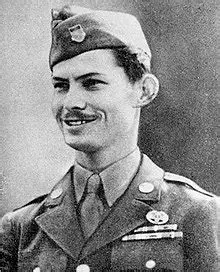
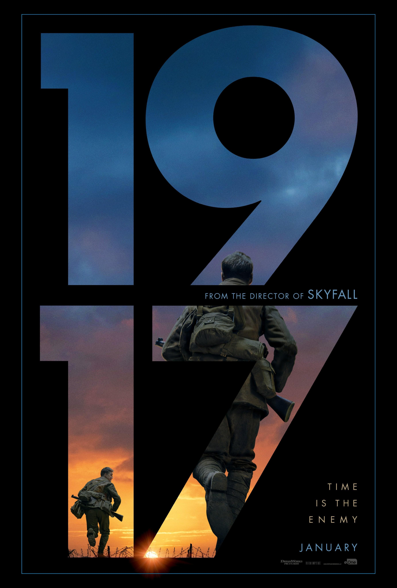
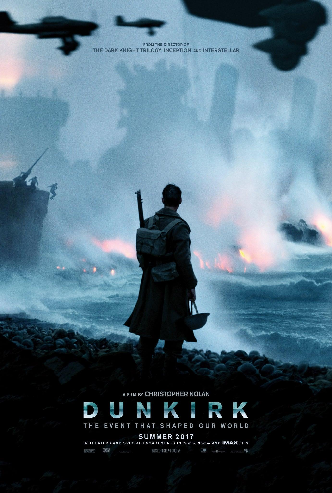

1942 - Un soldat sans arme
Desmond Doss rejoint l'armée américaine comme infirmier militaire. Il refuse de porter une arme, mais souhaite servir son pays en soignant les blessés.
GUERRES ET CONFLITS
Quand la Seconde Guerre mondiale a éclaté, Desmond, un jeune américain, s’est retrouvé confronté à un dilemme : comme n’importe lequel de ses compatriotes, il voulait servir son pays, mais la violence était incompatible avec ses croyances et ses principes moraux. Il s’opposait ne serait-ce qu’à tenir une arme et refusait d’autant plus de tuer. Il s’engagea tout de même dans l’infanterie comme médecin. Son refus d’infléchir ses convictions lui valut d’être rudement mené par ses camarades et sa hiérarchie.

Desmond Doss rejoint l'armée américaine comme infirmier militaire. Il refuse de porter une arme, mais souhaite servir son pays en soignant les blessés.
Pendant les combats, Desmond Doss reste sur une falaise sous les tirs ennemis pour secourir des soldats blessés. Il est crédité du sauvetage d'environ 75 hommes.

Le président Harry Truman remet à Desmond Doss la Medal of Honor, la plus haute décoration militaire américaine, pour son courage à Okinawa.
Découvre d'autres films qui abordent la guerre et ses conséquences sur les populations civiles.

1988

2019

2017

1998